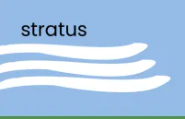
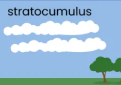
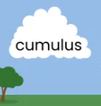
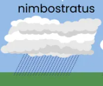

Low clouds
The low clouds can have an heigh from the surface up to 2km.
The low clouds names are:
Click here to download the pdf version of this page.
Stratus
Stratocumulus cloud are very low clouds, and because there are very low we can
be in it.
They are also very thin and light, so rain can easily go through it.
They have a light grey color, and it rain when there are present.

Stratocumulus
Stratocumulus cloud are very low clouds.
They are also more compact that stratus cloud, so rain can not easily go through
it.
They have a light grey color.

Cumulus
Stratocumulus cloud are big cotton balls.
They grow in vertical and are very light color, almost white.
They are about 1km wide.

Nimbostratus
Nimbostratus cloud are dark grey color.
They bring with them continuous rain.
They are the rainy days cloud that we can see during winter.
